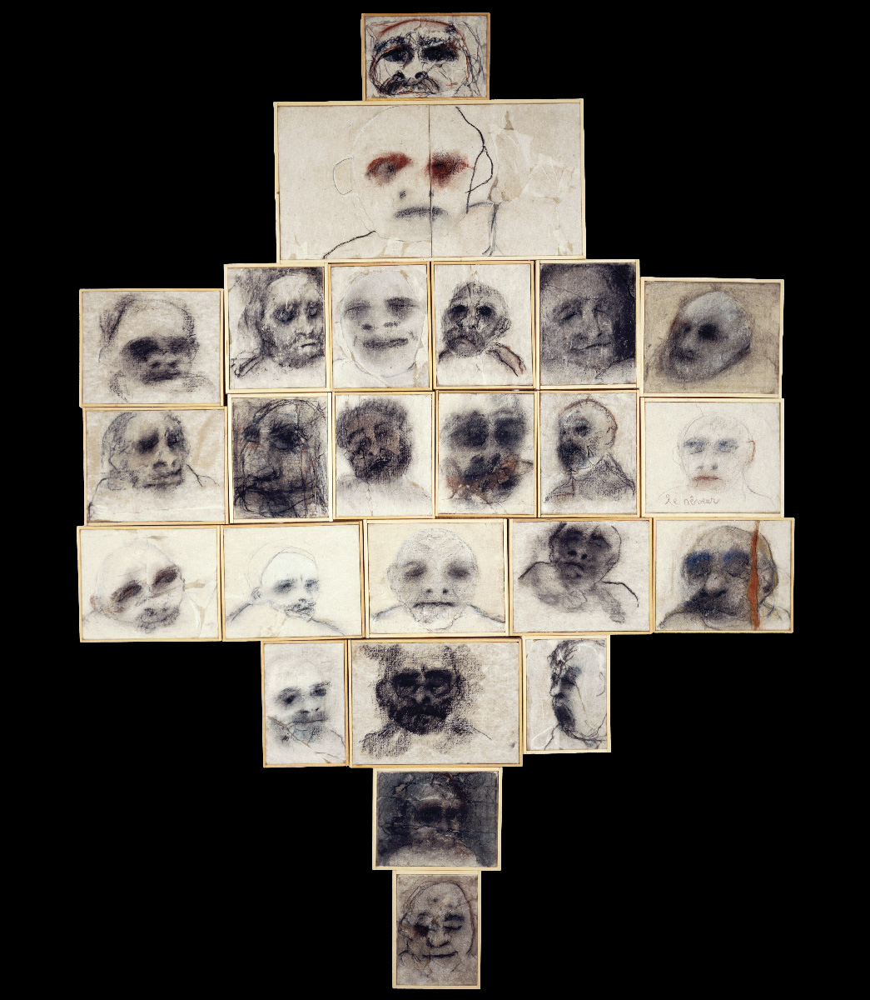
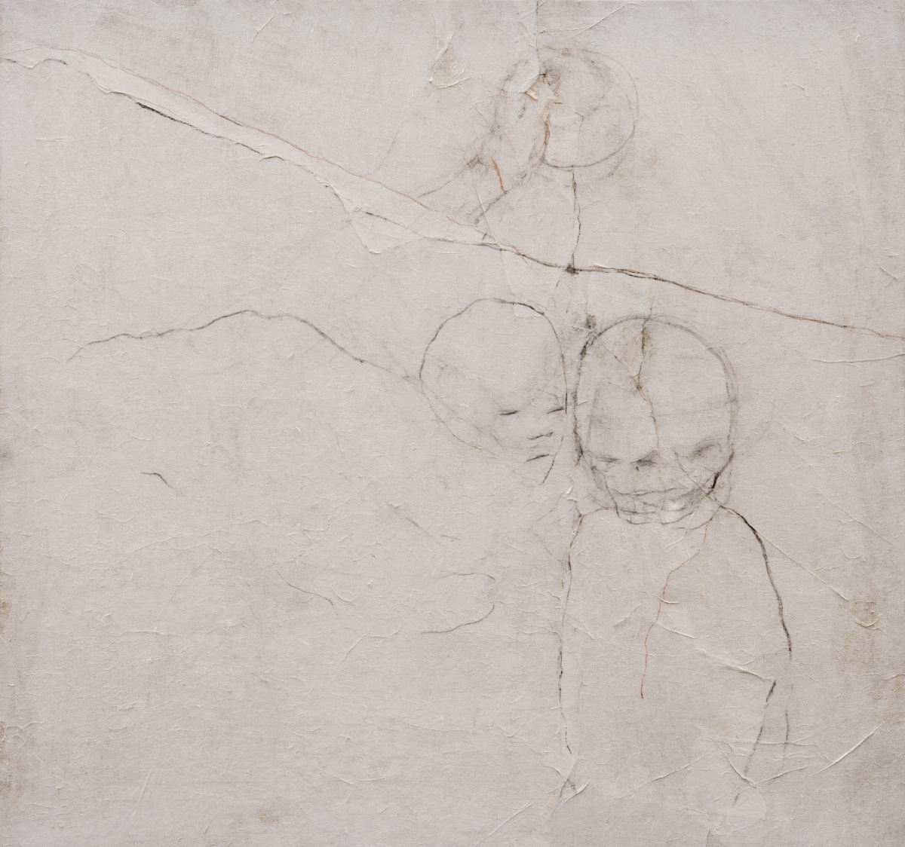
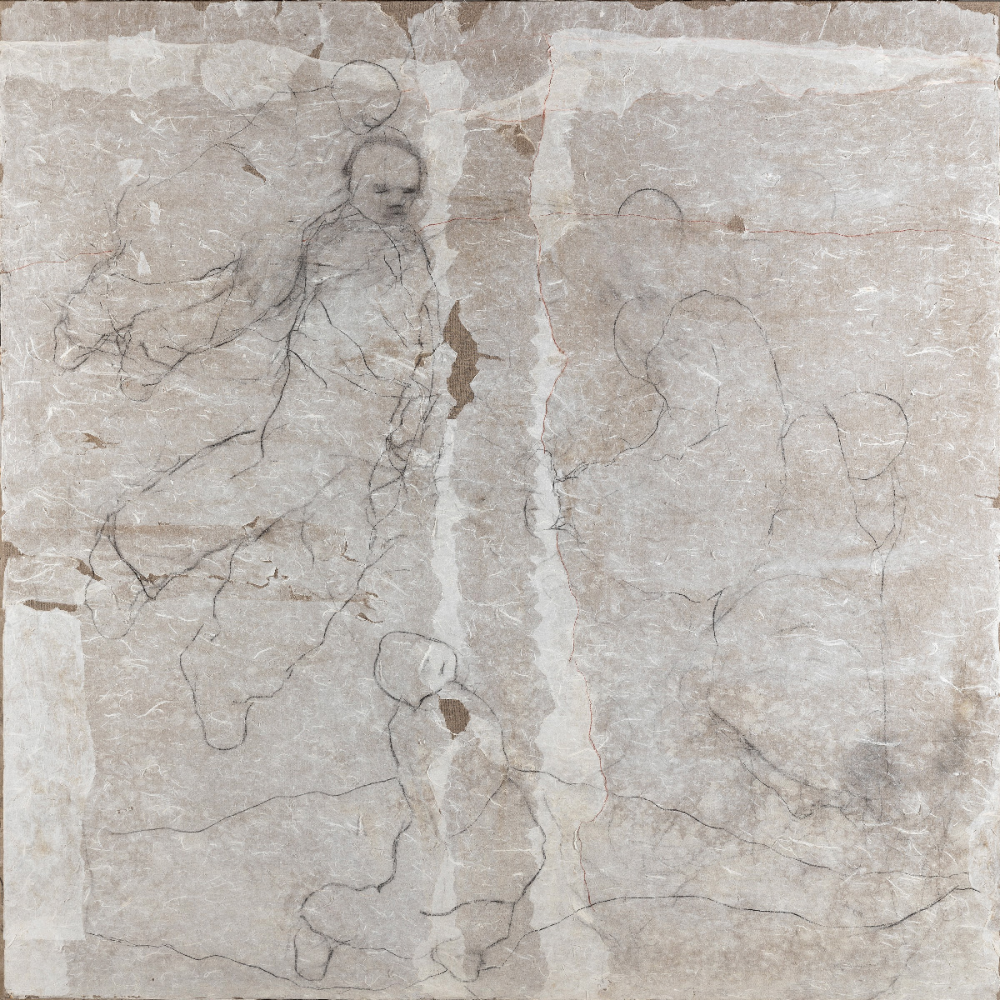
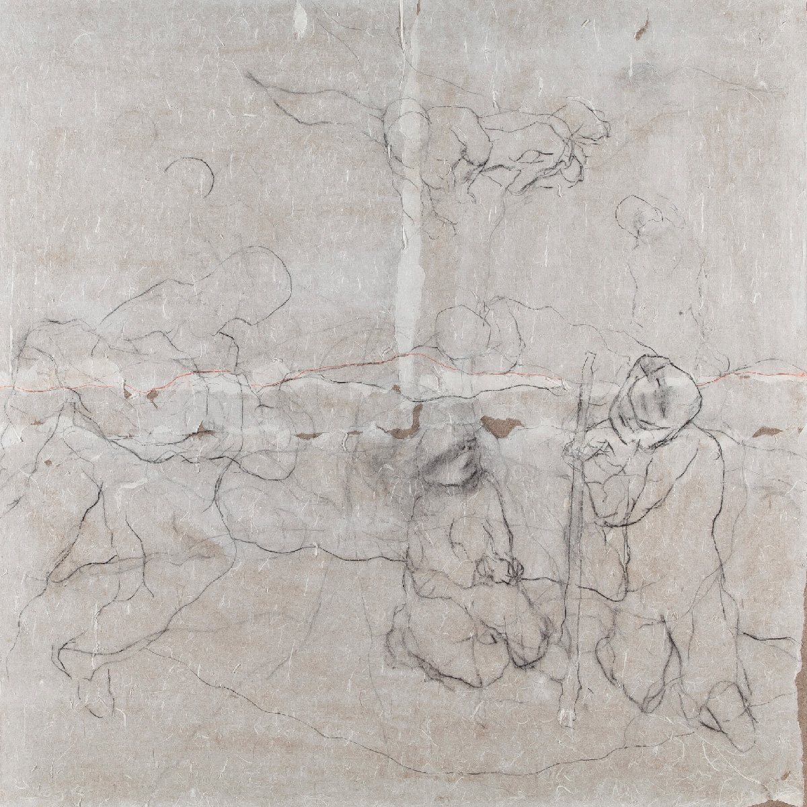
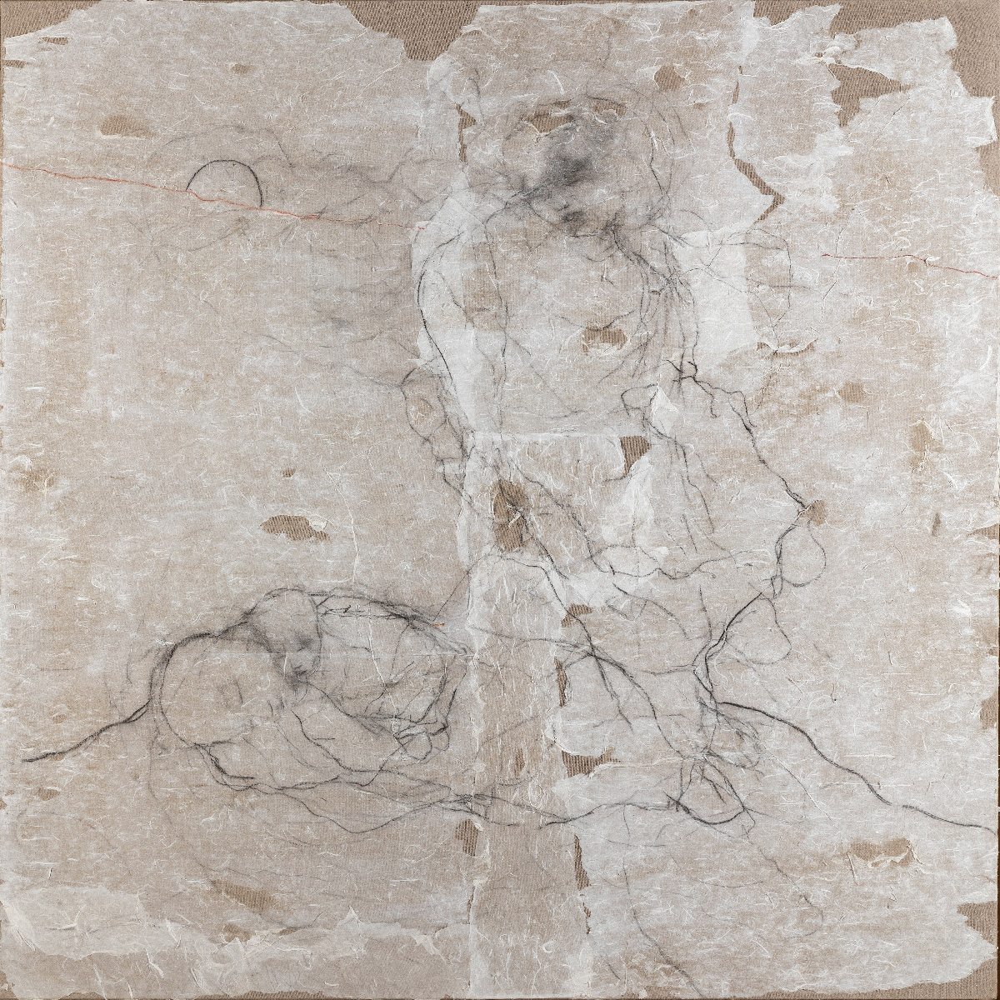
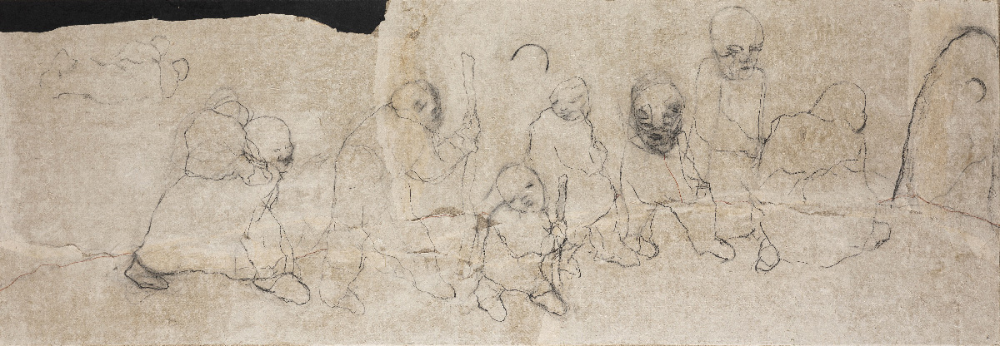
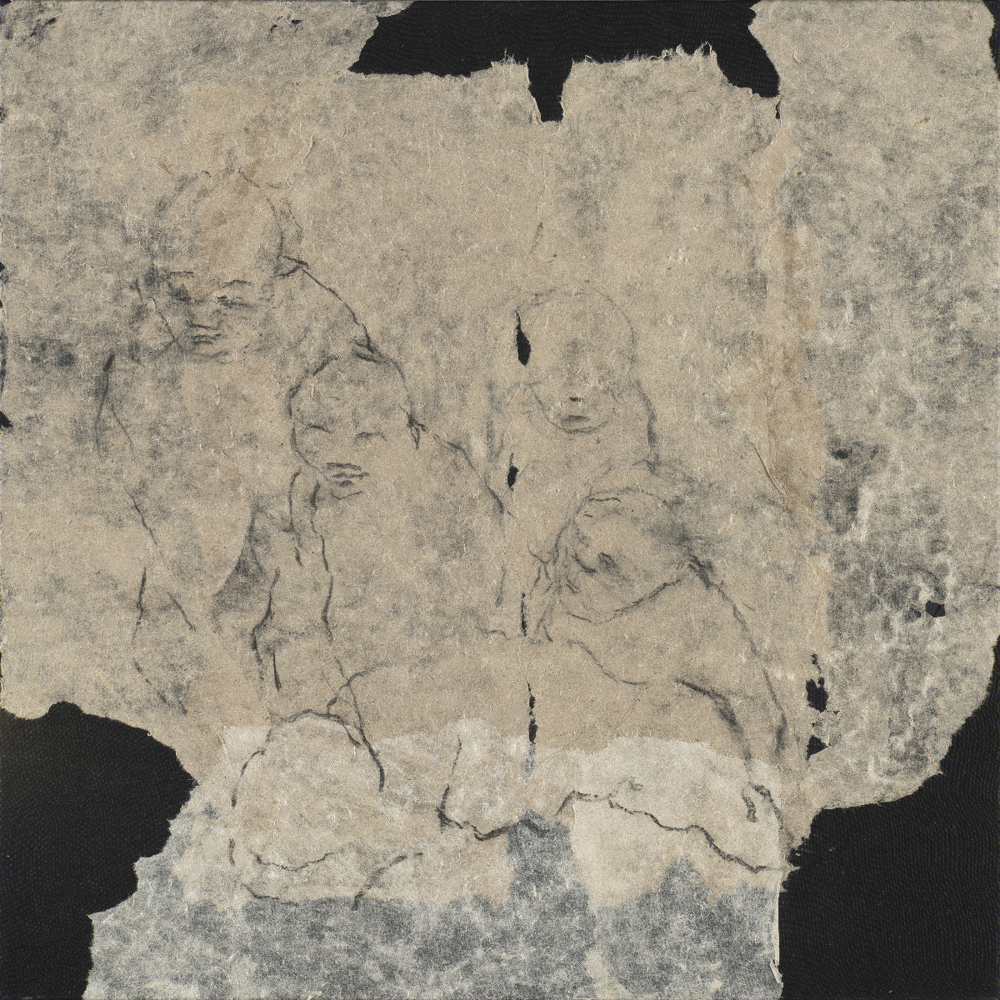
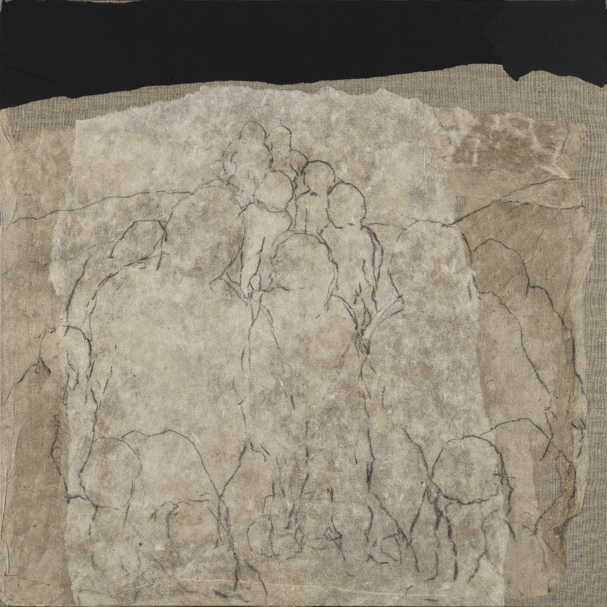
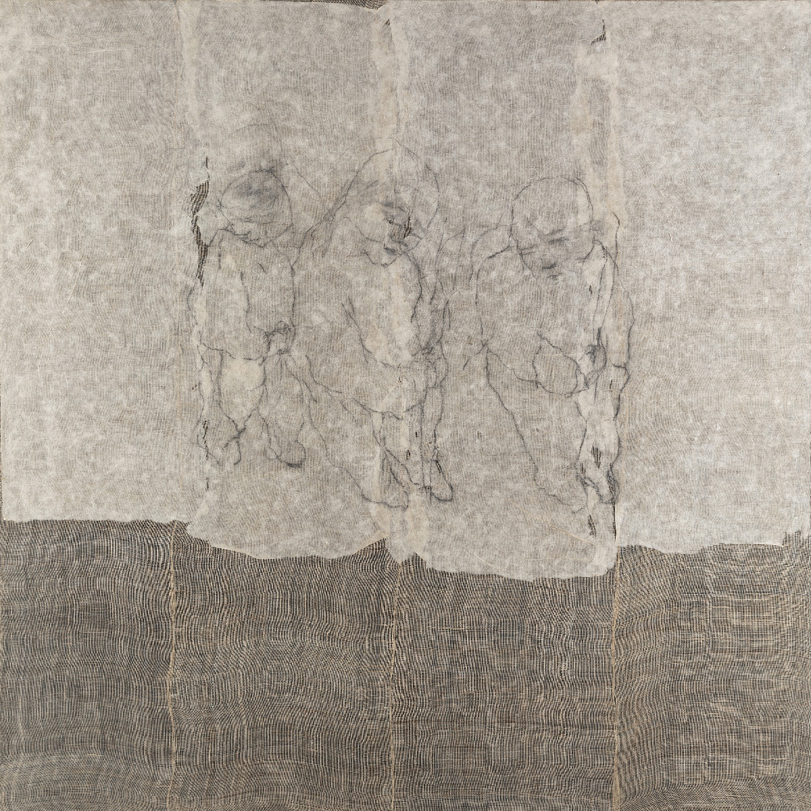

le livre des amitiés
11 avril — 27 juillet 2026
Dessins, peintures, écritures... sculptures
+33 (0)2 38 33 22 67 — reservations@a-m-i.fr
70, Avenue du Général Patton
Malesherbes, 45330 Le Malesherbois









"L'art de Michel Madore est au cœur de la création contemporaine, dans la plus forte et la plus vraie densité. Il détruit l'apparence du corps narcissique pour faire surgir l'âpreté du trait, l'infinie résistance de l'être aux agressions de l'existence..."